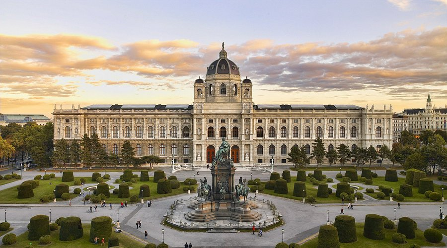
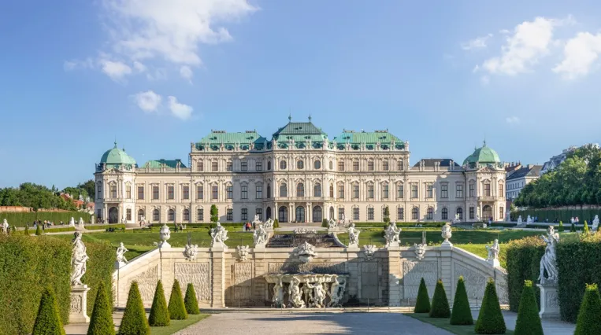
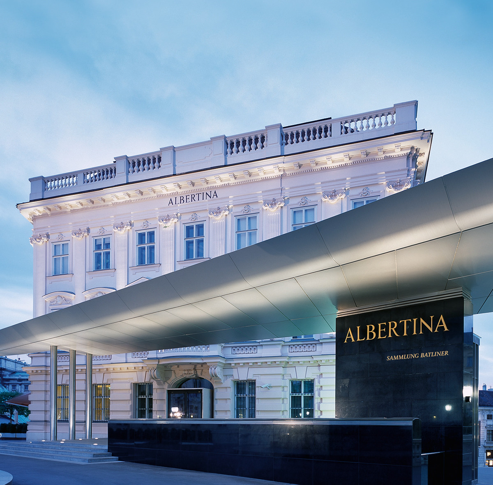
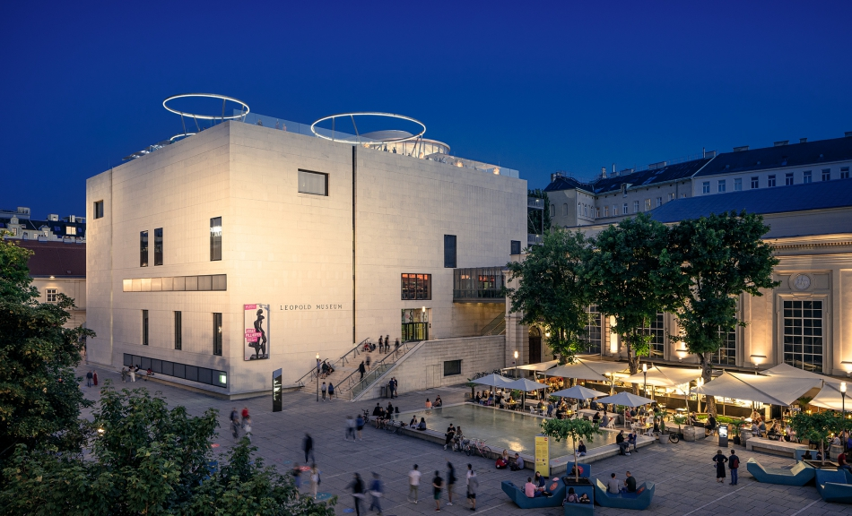
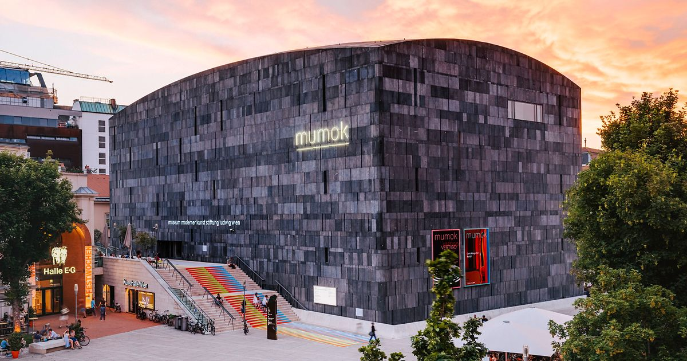
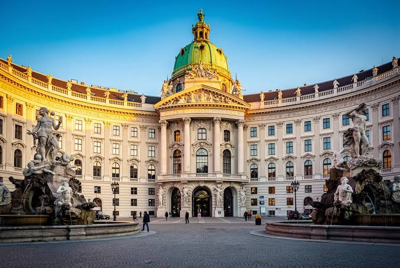
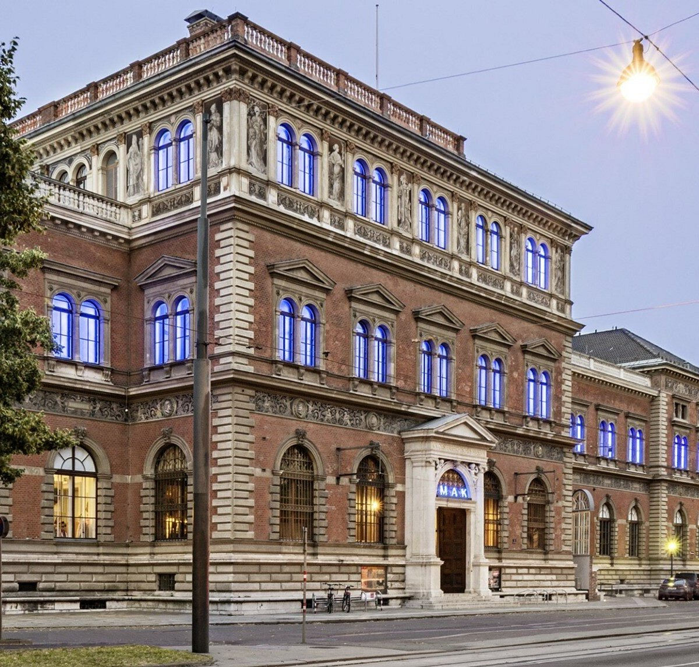
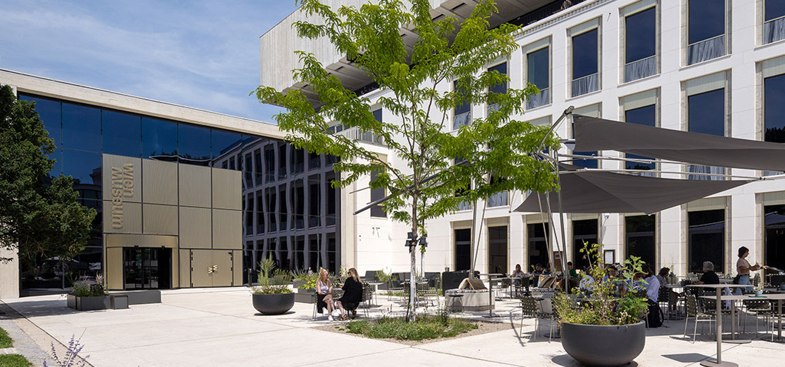
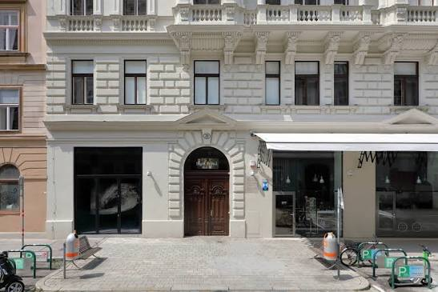

Kunsthistorisches Museum Wien (Maria-Theresien-Platz, 1010 Wien) is an imposing 19th-century palace museum built to showcase the vast artistic treasures accumulated by the Habsburg dynasty.

Belvedere Palace (1030 Vienna) is a stunning Baroque palace complex comprising the Upper and Lower Belvedere set within terraced French gardens.

Albertina occupies a sprawling former Habsburg archducal palace overlooking the Ringstraße.
Showcases one of the world's largest graphic art collections, alongside permanent exhibitions featuring Impressionist and early Modernist masterworks from Monet to Picasso.

Built around a specialized collection of early Austrian modernism, featuring the world's largest holding of works by Egon Schiele alongside pieces by Gustav Klimt.

Focuses exclusively on 20th- and 21st-century modern art, featuring major pieces of Pop Art, Fluxus, and Viennese Actionism.
Reviewers enjoy its thought-provoking temporary exhibits and extensive collections from artists like Andy Warhol and Pablo Picasso.

Dedicated to the fascinating, tragic life and personal cult surrounding Empress Elisabeth ("Sisi"), displaying personal belongings, royal gowns, and historical documents.

Features famous collections of Viennese Jugendstil furnishings, handcrafted silver, and historic bentwood chairs by Michael Thonet.

serves as the primary municipal museum documenting the rich social and architectural history of Vienna from Roman times to the modern era.
Completely renovated and expanded, offering free admission to its core permanent city history collection.

is located in the former residence and practice rooms where the founder of psychoanalysis lived and worked for nearly half a century.
Preserves original living quarters, waiting room spaces, and conceptual exhibits detailing the history of psychoanalysis.